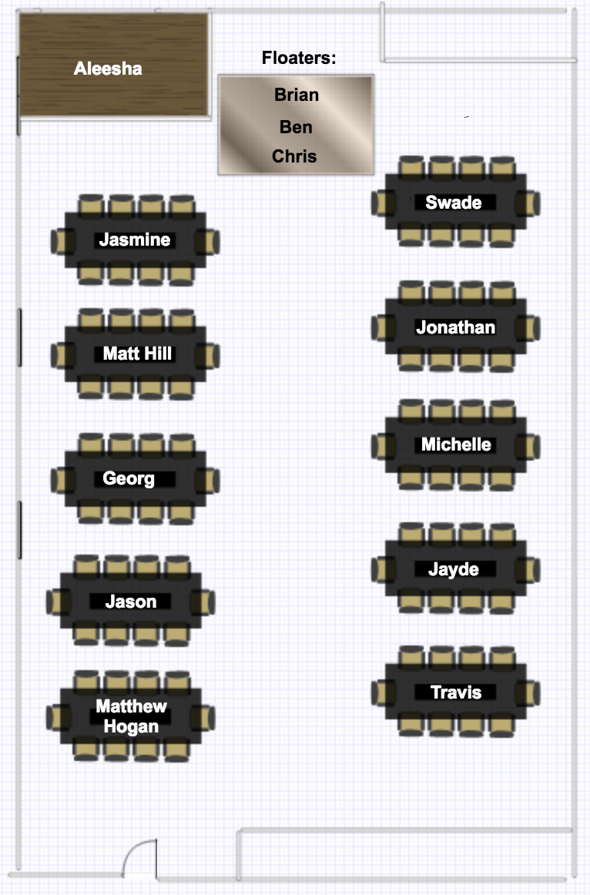

class: center <div id="seating-chart">  </div> --- class: center, middle # Unit 2 ## Web Fundamentals --- <!-- TODO --> ### About This Unit - Something - Something - Something - Something --- <!-- TODO --> ### Important Unit 2 Links - [Class Schedule](https://education.launchcode.org/web-fundamentals/classes/) - [Canvas](https://learn.launchcode.org/) - [GitHub](https://github.com) - [Discourse]() - Other Resources: - [Codecademy] - [Pluralsight] --- ### Structure of Unit 2 Classes 1. Studio Solution 1. "Lecture" 1. Graded Exercise Clarifications 1. Studio Walkthrough 1. Studio 1. Work on Exercises/HW/Whatever --- class: center, middle # Class 1 Lecture --- ### Topics - `git` - HTML --- <!-- TODO --> ### `git` - What is it? - Why is it useful? - Why do students hate it (at first)? - Why is it different than GitHub? - What is GitHub? --- <!-- TODO --> ### `git` Resources --- <!-- TODO --> ### `git` Demo --- ### HTML - Use this through the entire - Get more help [here](https://www.codecademy.com/learn/learn-html) --- class: center, middle # Q&A --- # [Studio Walkthrough](https://education.launchcode.org/web-fundamentals/studios/fake-news/) --- class: center, middle # [Find your TA](https://learn.launchcode.org/courses/144/users)